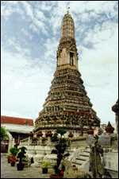
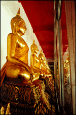

{kind=link}
{kind=link}
{kind=link}

The next day we went on a day walk of the old town across the river. You take these express boats on the river for like 2 cents to travel as far as you want. We feed turtles papaya at a monastery grave yard, saw Dutch style homes, a European church, a famous temple (called Wat) called Wat Chedi and another across the river called Wat Po with a 150 foot reclining Buddha. Angela got a 1/2 traditional Thai massage, I got a new sexy Thai massage (just kidding).
| Across the river there is this Wat of the Dawn. | |
| Right now they are restoring it. It was originally built with potery chards donated by the local residents. |  |
|  | One courtyard of 75 square yards at Wat Po was lined with Golden Buddhas. |
| This is one close up. |
| There was this neat rock formation with some flowering trees and these hermits praying in different positions. | |
| There is a 150 foot long reclining Buddha that dominates Wat Po. | |
| This is a shot of his head. |
That night we went to an awesome, expensive for Thailand ($19) dinner in downtown and then we went to Patpong.... the seediest street with all the sex shows. I personally wanted to go in and see "PUSSY EATING WITH CHOPSTICKS" but Angela made me buy 2 ripped off polo shirts at the night market in the middle of the Patpong..... the night market was the excuse 90% of the people used to see Patpong, but the sex trade is all over Thailand and there are a LOT of single western men touring.
Thailand - Bangkok - Day 1 | Thailand - Bangkok - Day 3
{kind=link}
{kind=link}
{kind=link}